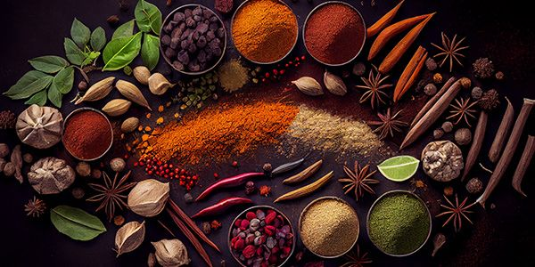

Spices

Spices play a crucial role in Indian cuisine, both for their flavors and their medicinal properties. Indian cooking is renowned for its complex use of spices, which not only enhance the taste of food but also contribute to health and wellness. Here are some key aspects of spices in Indian tradition:
Culinary Importance
Flavor Profiles:
Indian dishes are often characterized by a harmonious blend of spices, creating rich and diverse flavor profiles. Common spices include cumin, coriander, turmeric, mustard seeds, cardamom, cloves, and chili peppers.
Regional Variations:
Different regions of India have their own unique spice blends and cooking techniques. For example, garam masala is popular in North India, while South Indian cuisine often uses spices like curry leaves and black mustard seeds.
Medicinal Uses
Ayurveda:
Many spices are integral to Ayurveda, the ancient Indian system of medicine. For instance, turmeric is celebrated for its anti-inflammatory properties, while ginger is often used for digestion.
Health Benefits:
Spices like cumin, fenugreek, and black pepper are not only flavorful but also believed to promote overall health, improve metabolism, and boost immunity.
Cultural Significance
Religious Rituals:
Spices often feature in religious and cultural rituals. For instance, during festivals, specific spices might be used in cooking special dishes.
Traditions and Heritage:
The use of spices is deeply rooted in Indian culture, with many families passing down traditional recipes and knowledge about spices through generations.
Economic Impact
Trade and Economy:
Historically, India was known as the "Land of Spices," and the spice trade played a significant role in the country’s economy. Spices like black pepper, cardamom, and saffron have been traded for centuries, influencing global trade routes.